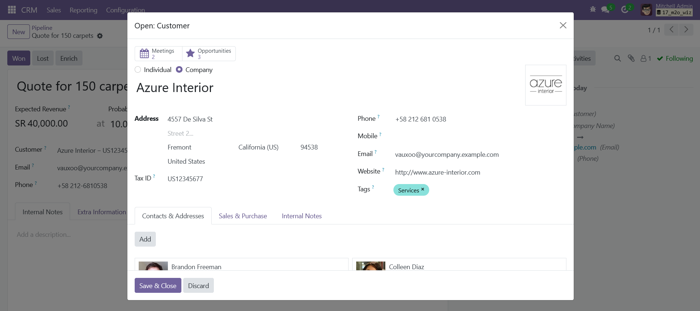
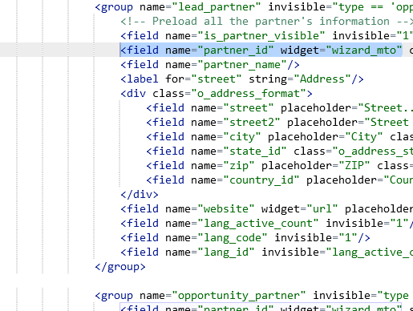

<section class="oe_container">
    <div class="oe_row oe_spaced">
        <h2 class="oe_slogan" style="color:#875A7B;">Many2one Wizard Widget</h2>
        <h3 class="oe_slogan">Opens many2one field as a wizard.</h3>
        <div class="oe_demo oe_picture oe_screenshot">
            
        </div>
    </div>
</section>

<section class="oe_container oe_dark">
    <div class="oe_row oe_spaced">
        <h2 class="oe_slogan" style="color:#875A7B;">Opens new wizard for m2o fields</h2>
        <h3 class="oe_slogan">Allows you to open m2o field without exiting current view</h3>
        <div class="oe_span6 text-justify oe_mt32">
            <span class="fa fa-arrow-right fa-2x pull-left"/>
            <p class="oe_mb32" style="margin-left:48px;">
            User friendly.
            </p>
            <span class="fa fa-arrow-right fa-2x pull-left"/>
            <p class="oe_mb32" style="margin-left:48px;">
            Easy navigation.
            </p>

        </div>
        <div class="oe_span6">
            
        </div>
    </div>
</section>

<section class="oe_container oe_separator">
</section>